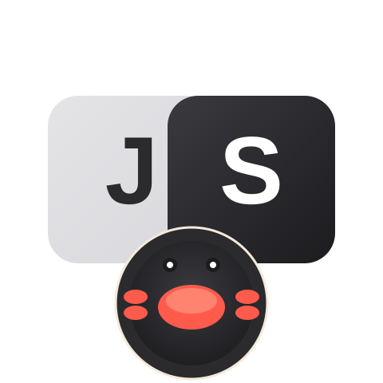

banner-01-mono-fade.svg -- светло-серый -> тёмный, тон нарастает слева направо
banner-02-mono-bordered.svg -- как №1, но с тонкой обводкой квадратов (держит край на светлом фоне) и оранжевым кольцом бейджа
banner-03-warm-amber.svg -- тёплый крем -> тёмный, кольцо бейджа в тон
banner-04-orange-to-charcoal.svg -- левый квадрат = тот самый оранжевый с самого первого баннера, правый темнее его
banner-05-classic-current.svg -- то, что сейчас стоит на сайте: тёмный -> оранжевый (тон убывает слева направо)
banner-06-cool-neutral.svg -- приглушённая растяжка, серый акцент кольца бейджа (не оранжевый и не тёмный)

banner-07-dark-badge.svg -- эмблема инвертирована (тёмный фон, светлое кольцо, краб ярче) -- расчёт на тёмную тему
banner-08-duotone-orange.svg -- бледно-оранжевый -> коричнево-оранжевый, обе стороны в одной гамме